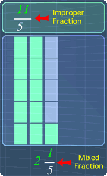
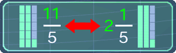
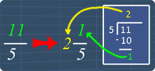
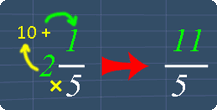

Improper Fractions and Mixed Fractions
Lesson Objective
In this lesson,
we will learn
about improper
fractions and
mixed fractions.
Also, we will
see how we can
convert from
improper to
mixed fraction
and vice versa.
About This Lesson
In Understanding Fractions,
we had seen some ideas behind improper
fractions and mixed fractions.
So now, for this lesson, we will first revisit the explanation for these two types of fractions and understand how they are related.
Next, we will learn the method to quickly convert between improper and mixed fraction.
You can proceed by reading the study tips first or watch the math video or try out the practice questions.
So now, for this lesson, we will first revisit the explanation for these two types of fractions and understand how they are related.
Next, we will learn the method to quickly convert between improper and mixed fraction.
You can proceed by reading the study tips first or watch the math video or try out the practice questions.

Tip #1 - Understand the difference
Improper fraction and mixed fraction are
equivalent. The only difference is that they are
written differently (see picture below).
Therefore, it is important understand the
difference between them.
The math video below will explain more about it.

The math video below will explain more about it.
Tip #2 - Improper to Mixed Fractions
To quickly convert from improper to mixed
fraction, we use the 'long division' method.
The picture below shows an example on converting 11/5.
The math video below and the practice questions will explain this in detail.

The math video below and the practice questions will explain this in detail.
Tip #3 - Mixed to Improper Fractions
To quickly
convert from
mixed to
improper
fraction, we use
the steps shown
in the picture
below.
Below is an example on converting 2 1/5.
The math video below and the practice questions will explain this in detail.
Below is an example on converting 2 1/5.

The math video below and the practice questions will explain this in detail.
Math Video Transcript
Multiple Choice Questions (MCQ)
Now, let's try some MCQ questions to understand
this lesson better.
You can start by going through the series of questions on Improper Fractions and Mixed Fractions or pick your choice of question below.
You can start by going through the series of questions on Improper Fractions and Mixed Fractions or pick your choice of question below.
- Question 1 on converting improper to mixed fractions
- Question 2 on converting mixed to improper fractions